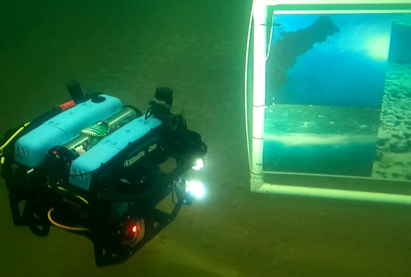

Research ↗
Learning-based control, underwater perception, manipulation, multi-robot autonomy and simulation.
The Ocean Systems Laboratory is a multidisciplinary science and engineering research centre that innovates, applies and teaches world-class advances in autonomous systems, sensor modelling/processing, and underwater acoustic system theory/design for offshore, marine science, renewable energy and security applications.
Its research and training focus is on the broad classes of physical and cognitive interactions between robots, people, environments and autonomous systems. It has over 30 years of experience in AUVs and marine robotics, creating internationally successful businesses and contributing to Marine Science & Technology Scotland.
The Ocean Systems Laboratory is part of the Edinburgh Centre for Robotics, and the National Robotarium. The lab is co-led by Prof. Yvan Petillot and Dr. Ignacio Carlucho, and is comprised of several academics, postdocs and PhD students.


Learning-based control, underwater perception, manipulation, multi-robot autonomy and simulation.
Meet the academics, postdocs and PhD students behind the work.
Papers from the lab, by year.
Our wave tank, test tank, robots and simulators.
We currently have many openings, so if you are interested in doing a postdoc or a PhD please contact: ignacio.carlucho@hw.ac.uk. We have funding opportunities available at the SPADS CDT and the CDT-D2AIR.
Are you interested in doing an MSc in Robotics? Come study with us at Heriot-Watt University and the National Robotarium! We have some scholarship opportunities available here!